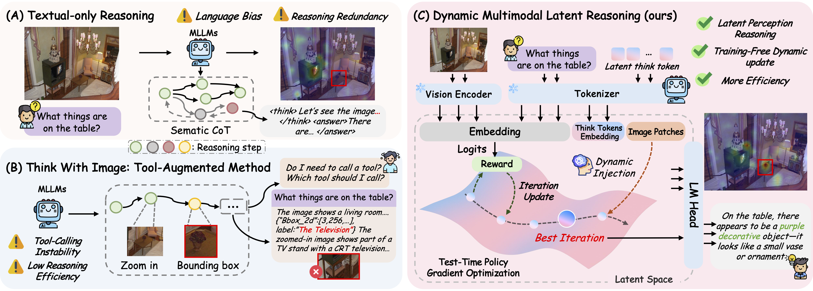
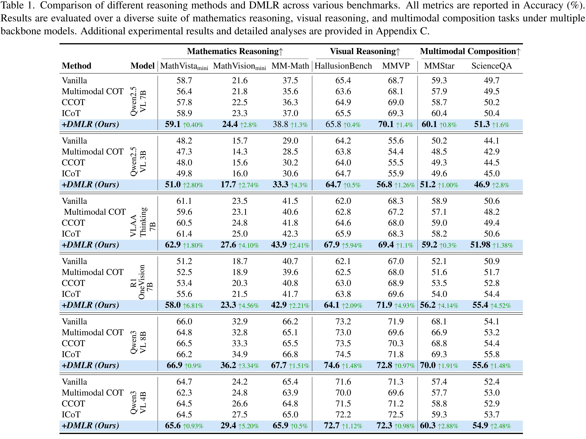
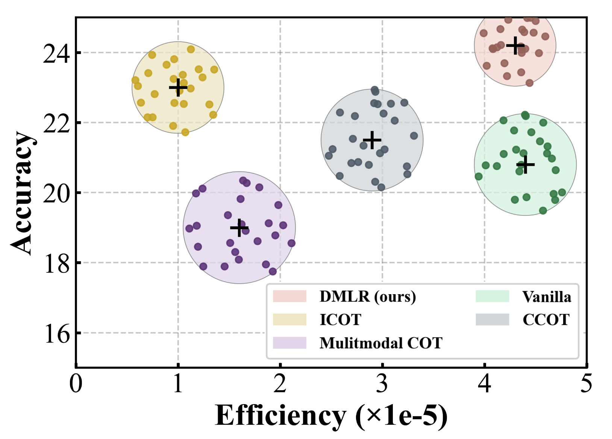

Reasoning Within the Mind:
Dynamic Multimodal Interleaving
in Latent Space
 arXiv
arXiv
Multimodal LLMs often depend on explicit chain-of-thought text or fragile perception tools, producing redundant steps and unstable grounding. DMLR instead optimizes latent think tokens with a confidence-guided objective and injects only the most helpful visual evidence during inference, boosting accuracy while keeping inference lightweight and training-free.
Overview

Comparison among text-only reasoning, tool-heavy think-with-image paradigms, and the proposed DMLR pipeline that interleaves latent thinking with targeted visual injections.
🎯Challenge
Existing multimodal reasoning systems either run long explicit CoT traces or repeatedly call external perception tools, both of which add latency and often cause visual hallucination because textual reasoning drifts away from actual evidence.
⚡DMLR Solution
DMLR treats "thinking" as a latent space optimization problem. A confidence reward guides the update of latent think tokens while a dynamic visual injection policy retrieves only the visual patches that help the current thought, mirroring how humans interleave perception and reasoning internally.
The framework is entirely test-time: no model weights are finetuned. Instead, DMLR optimizes the latent tokens it feeds to an off-the-shelf MLLM and lets the internal confidence signal decide when the reasoning trajectory is reliable. This enables fast deployment on top of any frontier model.
Across seven multimodal reasoning benchmarks, DMLR consistently outperforms explicit CoT baselines and recent think-with-image systems, all while reducing redundant perception calls and keeping inference costs low.
Empirical Observations
Analysis of real trajectories reveals that most reasoning tokens can evolve entirely in latent space; only a few moments require explicit grounding. Confidence curves mirror this behavior, providing a dependable internal signal for steering DMLR.
Visual Sparsity
The visualization highlights how few steps truly benefit from additional perception. By keeping most iterations in latent space, DMLR avoids redundant image reads and lets the optimizer focus on reasoning quality instead of pixel churn.
This sparsity motivates the Dynamic Visual Injection strategy—visual evidence is fetched only when the optimizer determines it will improve the current trajectory, mirroring how people glance back at stimuli only when necessary.

Confidence as a Control Signal
Internal confidence rises in tandem with correct reasoning steps and drops when hallucinations occur. DMLR uses this curve as a training-free reward: perturbations that raise confidence are followed, while those that hurt it are discarded.
Because the signal comes from the model itself, the optimizer can generalize across tasks without collecting labels, delivering the observed training-free improvements on MathVista and other visual reasoning benchmarks.

Methodology

DMLR rewrites reasoning into two coupled loops: a confidence-guided latent policy gradient over think tokens and a visual injection strategy that only activates when perception can improve confidence. Everything happens at test time, so the base MLLM remains frozen.
Each iteration samples perturbations of the latent tokens, scores them using the model’s own confidence, and keeps the update that best improves this reward. When confidence plateaus, the process terminates with a concise, grounded reasoning trace.
Latent Policy Optimization
Instead of emitting explicit text, DMLR optimizes a sequence \(\mathcal{T}\) of latent think tokens. A REINFORCE-style estimate nudges \(\mathcal{T}\) in the direction of perturbations that raise internal confidence, keeping the search tight.
- Latent think tokens. Initialized from the prompt and refined through 3–5 iterations.
- Confidence reward. \(\mathcal{R}\) comes from the model’s own belief, so no labels are required.
- Stopping. Optimization halts once confidence saturates, preventing runaway token growth.
Dynamic Visual Injection
Visual evidence is fetched only when the optimizer predicts it will help. Top-\(k\) patches that increase confidence are merged into the latent context, allowing the system to alternate between “imagine” and “look” states without external tools.
- Patch selection. Attention scores rank candidate regions; only helpful patches are injected.
- Interleaved reasoning. Newly injected features steer the next latent step, mirroring how people revisit the scene.
Signals & Outputs
- Images. Encoded once; selective retrieval drastically cuts visual token usage.
- Confidence signal. Drives the optimizer without supervised targets.
- Outputs. Final answers and reasoning traces decoded from the converged latent tokens.
Mathematical Model
The optimizer updates latent think tokens \(\mathcal{T}^{(t)}\) using a gradient estimate derived from confidence rewards. Noise \(\xi\) sampled from a Gaussian proposal perturbs the tokens and the resulting reward steers the update, yielding a REINFORCE-style learning signal without labeled data.
Latent Update Rule
The reward \(\mathcal{R}\) grows with model confidence, so high-confidence perturbations shift the latent trajectory in their direction.
Dynamic Visual Injection
Candidate patches \(v_i\) are ranked by attention against the current latent query \(q_t\). DMLR selects the top-\(k\) patches that maximize the reward delta and augments the latent tokens:
This keeps the inference loop stable—visual evidence is injected only when it measurably improves confidence.
Performance
Benchmark Overview

DMLR delivers consistent gains across seven multimodal reasoning benchmarks.
Highlights
- MathVista +1.5% accuracy increase compared with the best explicit CoT baseline.
- Training-free deployment while outperforming methods that rely on expensive fine-tuning.
- Lower latency thanks to fewer perception calls and shorter reasoning traces.
Key Insights
- SOTA accuracy. Latent reasoning beats explicit text generation across seven benchmarks.
- Training-free efficiency. Only think tokens are optimized, so new MLLMs require zero finetuning.
- Confidence-guided control. The internal reward prevents reasoning drift and reduces hallucination.
- Grounded visual evidence. Dynamic injections ensure every glimpse contributes to the final answer.
Qualitative Analysis

Heatmaps reveal that explicit CoT baselines often drift toward irrelevant regions, which leads to hallucinated reasoning steps. Their attention remains unstable even after many thought tokens are produced.
DMLR keeps attention compact and steadily sharpens it as latent tokens are optimized. Only the most informative patches are inserted, enabling the model to converge on the evidence required to solve the task and resulting in grounded reasoning chains.
Efficiency
Because DMLR never backpropagates through the base model, it can be layered on top of any frontier MLLM. The optimizer typically converges in 3–5 iterations, and dynamic visual injection triggers only when the reward improves, drastically cutting perception calls compared with tool-heavy pipelines.

Latency remains low even as accuracy improves thanks to selective look-ups.
Inference Characteristics
- 3–5 latent optimization steps per query.
- Selective patch retrieval reduces visual tokens by ~60%.
- No storage overhead—only latent tokens are updated on the fly.
Deployment
DMLR slots into existing evaluation stacks; it only manipulates the prompt space, so weights stay frozen and compliance-friendly.
Reference
Feel free to cite DMLR if it helps your research.
@misc{liu2025reasoningminddynamicmultimodal,
title = {Reasoning Within the Mind: Dynamic Multimodal Interleaving in Latent Space},
author = {Chengzhi Liu and Yuzhe Yang and Yue Fan and Qingyu Wei and Sheng Liu and Xin Eric Wang},
year = {2025},
eprint = {2512.12623},
archivePrefix= {arXiv},
primaryClass = {cs.CV},
url = {https://arxiv.org/abs/2512.12623}
}